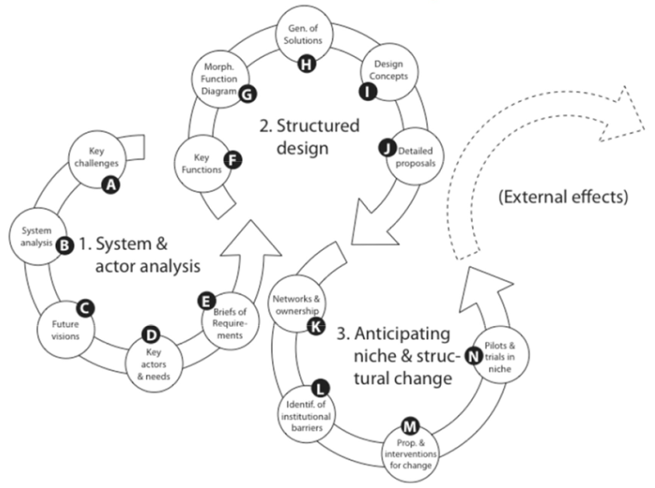

Structural design method
Reflexive Interactive Design (RID)

System Innovation
Main steps:
- Indentify current problems in the system
- Root cause analysis
- Define key challenges
- Determine system boundary
- Clarify desgin objectives and challenges
- Implement stakeholder analysis
- Define requirements
- Find corresponding functions
- Implement function analysis and define key functions
- Combine different functions to create a innovative system